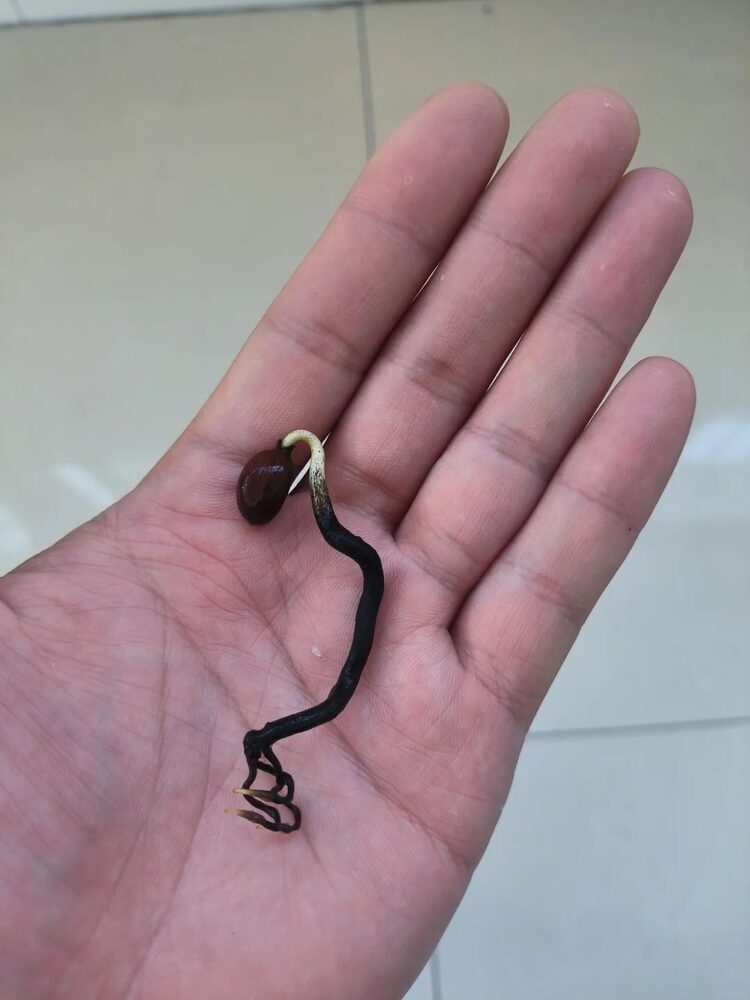
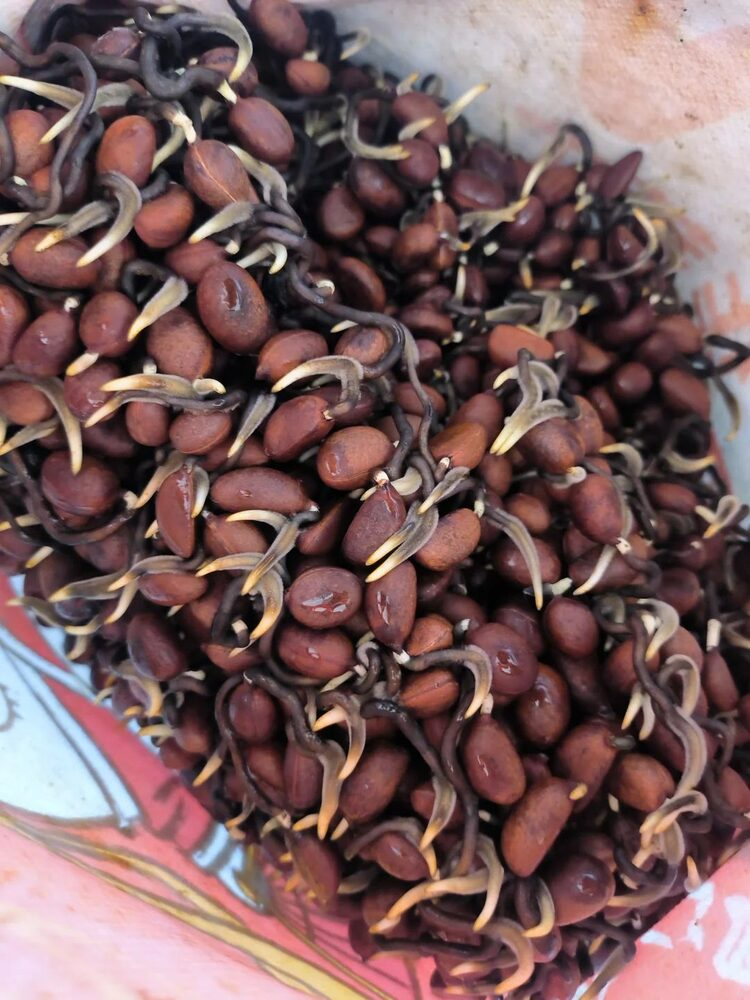
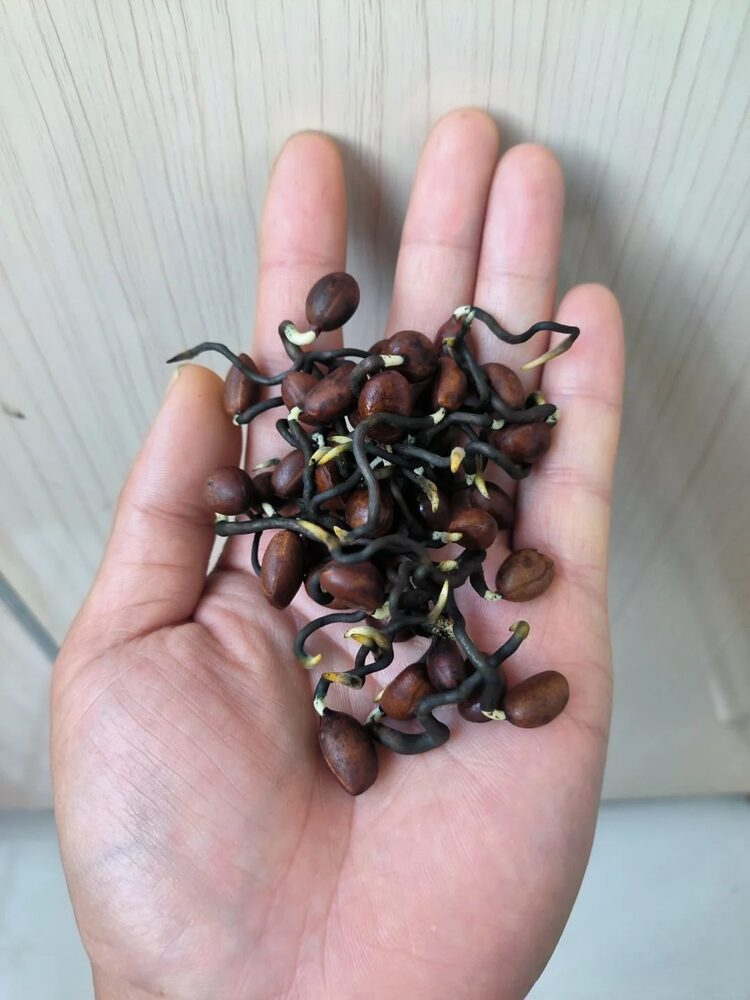
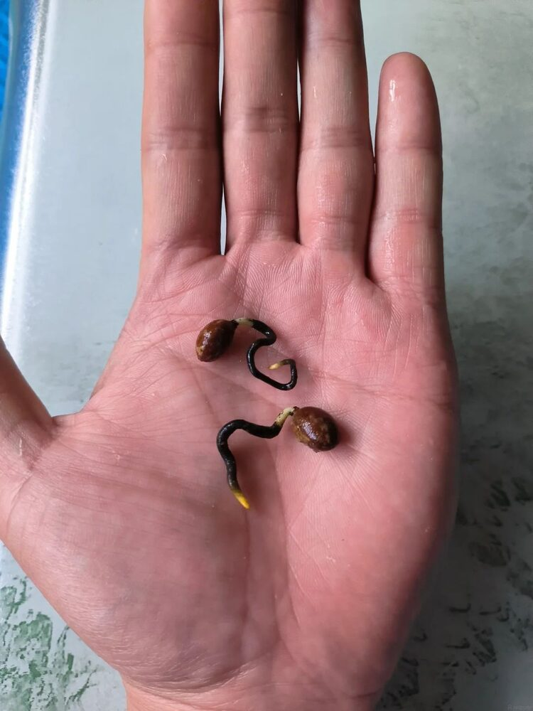
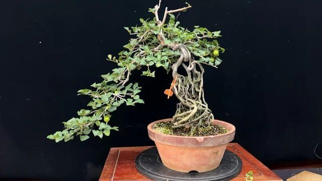
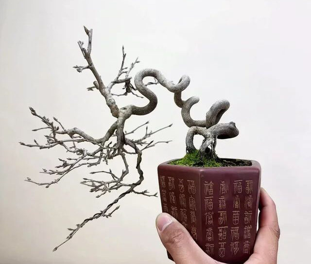
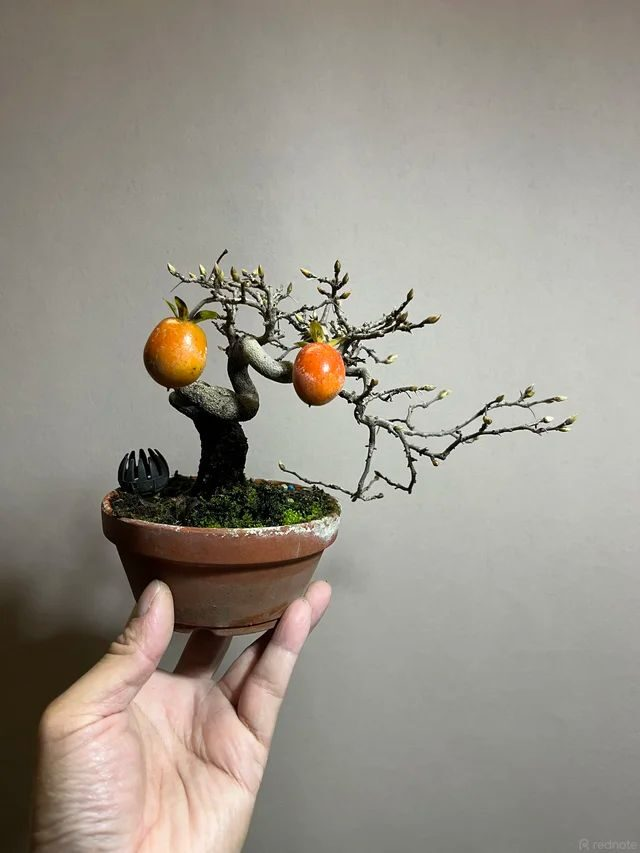

Kỹ thuật tạo dáng bonsai hồng Lão Nha (老鸦柿) ngay từ hạt giống – Phương pháp 豆芽弯
Khi tìm hiểu sâu hơn về hồng Lão Nha (老鸦柿 – cùng loài với Rōyagaki mà tôi đã viết trong bài trước), tôi để ý thấy nhiều nghệ nhân Trung Quốc không đợi cây lớn rồi mới uốn dây tạo dáng, mà can thiệp ngay từ lúc hạt vừa nảy mầm. Họ gọi cách làm này là 豆芽弯 (Dòuyá wān) – nghĩa đen là "đường cong kiểu mầm giá đỗ", vì khúc cong tạo ra trông rất giống cọng giá đỗ cong khi mới nhú.
Tôi thấy đây là một kỹ thuật đáng ghi lại, vì nó giải quyết đúng vấn đề mà ai chơi bonsai thực sinh (gieo từ hạt) cũng gặp: thân và rễ cây con mọc tự nhiên thường thẳng đuột, muốn có dáng uốn lượn đẹp sau này phải chờ cây đủ lớn rồi uốn dây, cắt tỉa, thậm chí ghép lại từ đầu – vừa mất nhiều năm vừa không chắc chắn. Trong khi đó, ở giai đoạn hạt vừa nảy mầm, phần rễ mầm còn rất non và mềm, chỉ cần tác động đúng lúc là đủ để định hình một đường cong mà cây sẽ giữ nguyên trong suốt quá trình phát triển về sau.

Nguyên lý tạo đường cong
Hiểu đơn giản, khi hạt nảy mầm, rễ mầm luôn có xu hướng phát triển theo chiều trọng lực – hiện tượng hướng địa dương (geotropism). Chóp rễ là nơi tập trung các tế bào cảm nhận trọng lực, quyết định rễ sẽ vươn tiếp theo hướng nào.
Nếu trong lúc rễ mầm còn mềm, ta chủ động thay đổi hướng đặt hạt, rễ sẽ uốn theo để tiếp tục mọc đúng chiều trọng lực mới. Chính tại điểm chuyển hướng đó, một khúc cong được hình thành. Lặp lại việc đổi hướng vài lần, cách nhau vài ngày, ta sẽ có nhiều khúc cong nối tiếp nhau, tạo thành một đường lượn tự nhiên cho rễ – phần sau này có thể trở thành thân hoặc được giữ lại làm rễ lộ đẹp mắt.
Thời điểm thực hiện và chuẩn bị hạt giống
Thời điểm phù hợp nhất để bắt đầu là ngay sau khi thu hạt, thường vào cuối thu đầu đông, lúc hạt còn tươi và tỷ lệ nảy mầm cao nhất. Hạt Lão Nha để càng lâu, đặc biệt nếu bảo quản khô, tỷ lệ nảy mầm sẽ giảm dần.
Ngâm hạt. Rửa sạch phần thịt quả còn sót lại quanh hạt, sau đó ngâm hạt trong nước ấm khoảng 30–40°C từ 24–48 giờ để làm mềm vỏ hạt và rút ngắn thời gian ngủ nghỉ. Nên thay nước 1–2 lần mỗi ngày trong lúc ngâm để tránh nước bị chua, dễ sinh nấm. Hạt nào nổi hẳn trên mặt nước sau khi ngâm thường là hạt lép, có thể loại bỏ.
Hai phương pháp ủ hạt
Sau khi ngâm, hạt cần được ủ ở nơi đủ ẩm và đủ ấm để kích thích nảy mầm. Tôi thấy có hai cách người chơi thường dùng, mỗi cách có ưu nhược điểm riêng.
Phương pháp 1 – Ủ trên giá thể Kanuma. Trải một lớp Kanuma nhỏ, giữ ẩm đều, rồi đặt hạt lên trên hoặc vùi hờ. Kanuma giữ ẩm tốt và thoáng khí, hạn chế úng, phù hợp nếu muốn ủ số lượng lớn mà không phải canh nước liên tục.
Phương pháp 2 – Ủ không giá thể. Xếp hạt vào khăn giấy hoặc khăn vải ẩm, cho vào hộp/túi kín để giữ ẩm, đặt nơi kín gió. Cách này đơn giản, dễ quan sát từng hạt riêng lẻ, và quan trọng nhất với kỹ thuật 豆芽弯 là dễ thao tác đảo hướng từng hạt mà không làm xáo trộn các hạt khác.
| Tiêu chí | Ủ trên Kanuma | Ủ không giá thể |
|---|---|---|
| Độ ẩm | Ổn định, ít phải can thiệp | Cần kiểm tra và làm ẩm lại thường xuyên |
| Dễ đảo hướng hạt | Khó hơn, dễ xáo trộn hạt khác | Rất dễ, thao tác từng hạt độc lập |
| Nguy cơ nấm mốc | Thấp hơn nhờ thoáng khí | Cao hơn nếu để quá ẩm hoặc kín hơi |
| Phù hợp quy mô | Số lượng hạt lớn | Số lượng ít, cần theo dõi sát từng hạt |
Với số lượng hạt ít và muốn kiểm soát đường cong thật kỹ, tôi nghiêng về phương pháp không giá thể hơn. Với số lượng lớn chỉ cần một phần cây lên dáng đẹp, Kanuma tiết kiệm công chăm hơn.

Duy trì nhiệt độ kích thích nảy mầm
Nhiệt độ lý tưởng để ủ hạt Lão Nha nảy mầm đều và khỏe thường nằm trong khoảng 20–25°C. Nếu nhiệt độ xuống quá thấp, hạt nảy mầm rất chậm hoặc không nảy. Ngược lại nếu quá nóng và ẩm cùng lúc, nguy cơ nấm mốc tấn công hạt tăng lên đáng kể.
Tôi thường đặt khay ủ ở nơi kín gió, tránh ánh nắng trực tiếp chiếu vào buổi trưa, và kiểm tra mỗi ngày để vừa theo dõi độ ẩm vừa phát hiện sớm hạt nào có dấu hiệu mốc để tách riêng ngay, tránh lây sang các hạt khác.
Đảo hướng hạt để tạo đường cong
Đây là bước quyết định của toàn bộ kỹ thuật. Khi rễ mầm đã nhú và dài khoảng 1–2cm, trong lúc rễ còn màu trắng ngà hoặc vàng nhạt, còn rất mềm, ta nhẹ nhàng xoay hoặc lật hạt sang một hướng khác, thường là 90–180 độ so với hướng rễ đang mọc.
Rễ sẽ tiếp tục mọc theo hướng trọng lực mới, tạo ra một khúc cong ngay tại điểm vừa đổi hướng. Sau vài ngày, khi đoạn rễ mới cũng đã mọc dài thêm một đoạn, có thể lặp lại thao tác đảo hướng thêm 1–2 lần nữa để tạo thêm các khúc cong tiếp theo.
Mỗi hạt có thể tạo ra một đường cong khác nhau tùy số lần và góc đảo hướng, nên kết quả cuối cùng không hạt nào giống hạt nào – đây cũng là điều tôi thấy thú vị nhất ở kỹ thuật này so với uốn dây kẽm vốn cho hình dáng khá "nhân tạo" và lặp lại.

Ngắt chóp rễ để kích thích hình thành nhiều rễ
Sau khi đã có đủ số khúc cong mong muốn, tôi thường ngắt bỏ một đoạn rất nhỏ ở chóp rễ chính. Việc này phá vỡ ưu thế đỉnh (apical dominance) của rễ chính, kích thích cây phát triển thêm nhiều rễ bên, giúp bộ rễ dày dặn hơn – vừa tốt cho sức khỏe cây con, vừa hữu ích nếu sau này muốn áp dụng kỹ thuật lấy rễ làm thân.
Cách thực hiện. Dùng kéo nhỏ hoặc dụng cụ bấm móng sạch, đã khử trùng, cắt bỏ khoảng 2–3mm ở chóp rễ, ngay phía dưới điểm cong cuối cùng.
Cách 1 – Gieo ngay. Sau khi ngắt chóp, đem hạt gieo thẳng vào giá thể đã chuẩn bị. Rễ bên sẽ hình thành dần trong lúc cây bắt đầu bén rễ ở môi trường mới.
Cách 2 – Tiếp tục ủ. Nếu muốn kiểm soát kỹ hơn, có thể tiếp tục ủ thêm vài ngày sau khi ngắt chóp, chờ các rễ bên mới nhú ra rõ ràng rồi mới đem gieo. Cách này giúp nhìn thấy trước phần nào hình dạng bộ rễ trước khi trồng, nhưng đòi hỏi theo dõi sát hơn để tránh hạt bị úng hoặc mốc trong thời gian ủ kéo dài.

Gieo trồng và nuôi dưỡng sau khi tạo cong
Khi gieo, cần đặc biệt cẩn thận để không làm thẳng lại đường cong vừa tạo. Tôi thường đặt hạt nằm nghiêng theo đúng chiều cong tự nhiên của rễ, phủ một lớp giá thể tơi xốp, thoát nước tốt, không nén chặt.
Giai đoạn đầu sau khi gieo, nên để cây con ở nơi có ánh sáng nhẹ, tránh nắng gắt trực tiếp, giữ ẩm đều nhưng không úng nước. Khi cây đã ra lá thật và bộ rễ bắt đầu ổn định, có thể tăng dần thời gian tiếp xúc ánh nắng để cây cứng cáp hơn.
Việc bón phân trong giai đoạn này nên rất nhẹ tay, ưu tiên phân loãng, nồng độ thấp, vì bộ rễ non rất dễ bị tổn thương nếu bón quá liều.

Lấy rễ làm thân – 以根代干
Đây là phần tôi thấy đặc sắc nhất khi kết hợp với 豆芽弯. Vì đường cong được tạo ra nằm ngay trên phần rễ, nhiều nghệ nhân chọn cách để lộ hẳn đoạn rễ đã uốn lượn lên trên mặt giá thể, thay vì vùi kín như rễ thông thường. Theo thời gian, đoạn rễ lộ ra sẽ hóa gỗ, dày lên và có kết cấu vỏ giống hệt một thân cây già – đây chính là kỹ thuật 以根代干 (lấy rễ làm thân).
Kết quả là một bộ "thân" có những khúc cong tự nhiên, mềm mại mà rất khó đạt được nếu chỉ uốn dây trên một thân mọc thẳng thông thường – đặc biệt phù hợp với phong cách dáng cổ, dáng văn nhân mà người chơi Lão Nha ở Trung Quốc rất ưa chuộng.

Lưu ý về khả năng ra quả của cây gieo hạt
Như tôi đã nhắc trong bài viết về thụ phấn, cây gieo từ hạt là thực sinh – một cá thể mới về di truyền, không phải bản sao của cây mẹ. Điều đó có nghĩa cây con từ kỹ thuật 豆芽弯 này hoàn toàn có thể là cây đực, không ra quả theo cách người chơi mong muốn, và phải chờ nhiều năm mới biết chắc giới tính khi cây ra hoa lần đầu.
Vì vậy tôi xem kỹ thuật này trước hết là một kỹ thuật tạo dáng cho thân/rễ, không phải một giải pháp để có ngay một cây sai quả. Nếu mục tiêu cuối cùng là một cây vừa có dáng đẹp vừa chắc chắn ra quả, một hướng đáng cân nhắc là sau khi bộ rễ/thân đã lên dáng theo cách này, có thể ghép một mắt hoặc cành của một cây cái đã được xác định giới tính lên gốc thực sinh đó, tận dụng dáng đẹp của gốc ghép.

Tóm tắt lộ trình thực hiện
Gộp lại toàn bộ các bước, lộ trình tôi sẽ áp dụng cho một mẻ hạt Lão Nha mới thu được tóm tắt như sau.
| Giai đoạn | Việc cần làm |
|---|---|
| Ngày 1–2 | Rửa sạch hạt, ngâm nước ấm 30–40°C, thay nước 1–2 lần/ngày |
| Ngày 3–10 | Ủ hạt (Kanuma hoặc khăn ẩm không giá thể), giữ nhiệt độ 20–25°C, theo dõi mỗi ngày |
| Khi rễ mầm dài 1–2cm | Đảo hướng hạt lần 1 để tạo khúc cong đầu tiên |
| Mỗi 3–5 ngày sau đó | Lặp lại đảo hướng thêm 1–2 lần nếu muốn thêm khúc cong |
| Khi đủ số khúc cong mong muốn | Ngắt chóp rễ chính, chọn gieo ngay hoặc ủ thêm vài ngày |
| Sau khi gieo | Giữ ẩm đều, ánh sáng nhẹ, bón phân loãng, tránh làm thẳng lại đường cong |
| Các tháng tiếp theo | Tăng dần ánh nắng, theo dõi bộ rễ bên phát triển |
| Các năm tiếp theo | Cân nhắc để lộ đoạn rễ đẹp nhất lên trên, áp dụng 以根代干 nếu phù hợp |
Lời kết
Điều tôi thích nhất ở 豆芽弯 là nó biến một giai đoạn vốn bị xem nhẹ – vài ngày hạt nảy mầm – thành bước quan trọng nhất quyết định dáng cây về sau. Thay vì chờ nhiều năm rồi mới can thiệp bằng dây kẽm, chúng ta định hình ngay từ những milimet đầu tiên của rễ mầm, khi cây gần như chưa tốn công chăm sóc gì.
Tất nhiên đây không phải kỹ thuật cho kết quả tức thì. Phải vài năm sau, khi đoạn rễ đã hóa gỗ và dày lên, dáng cây mới thực sự rõ ràng. Nhưng với tôi, đó cũng là một phần thú vị của việc chơi Lão Nha từ hạt: mỗi mẻ hạt là một lứa cây với những đường cong không cây nào giống cây nào, và người gieo hạt hôm nay là người quyết định phần lớn dáng dấp của cây trong nhiều năm tới.